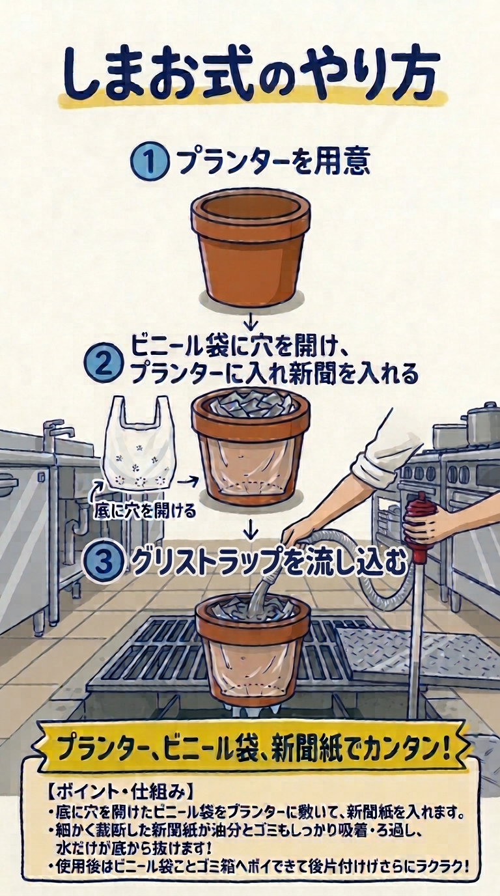

しまお式グリストラップ清掃のやり方
プランター、ビニール袋、新聞紙だけで、グリストラップの汚れをこし取る方法を3ステップで紹介します。

準備するもの
- プランター（鉢）
- ビニール袋（レジ袋など）
- 新聞紙（細かく裁断したもの）
手順
- プランターを用意する。グリストラップの近くの安定した場所に置きます。
- ビニール袋に穴を開け、プランターにセットする。袋の底に穴を開けてプランターに敷き、細かく裁断した新聞紙を入れます。
- グリストラップの内容物を流し込む。ポンプなどでくみ上げた内容物を新聞紙の上に流し込みます。
しくみ
細かく裁断した新聞紙が油分やゴミを吸着し、ろ過します。使用後はビニール袋ごと片付けられるので、後始末が楽になります。
注意点
- 底の穴から出る水にも、油分や細かい汚れが混ざることがあります。そのまま下水や側溝へ流さず、グリストラップへ戻すなどしてください。
- 回収した汚泥・廃油は、事業系廃棄物として扱われる場合があります。処分方法は、お住まいの自治体や許可業者に確認してください。
- 作業時は手袋を着用し、床が滑らないよう注意してください。
※ イラストはAIで作成したイメージです。